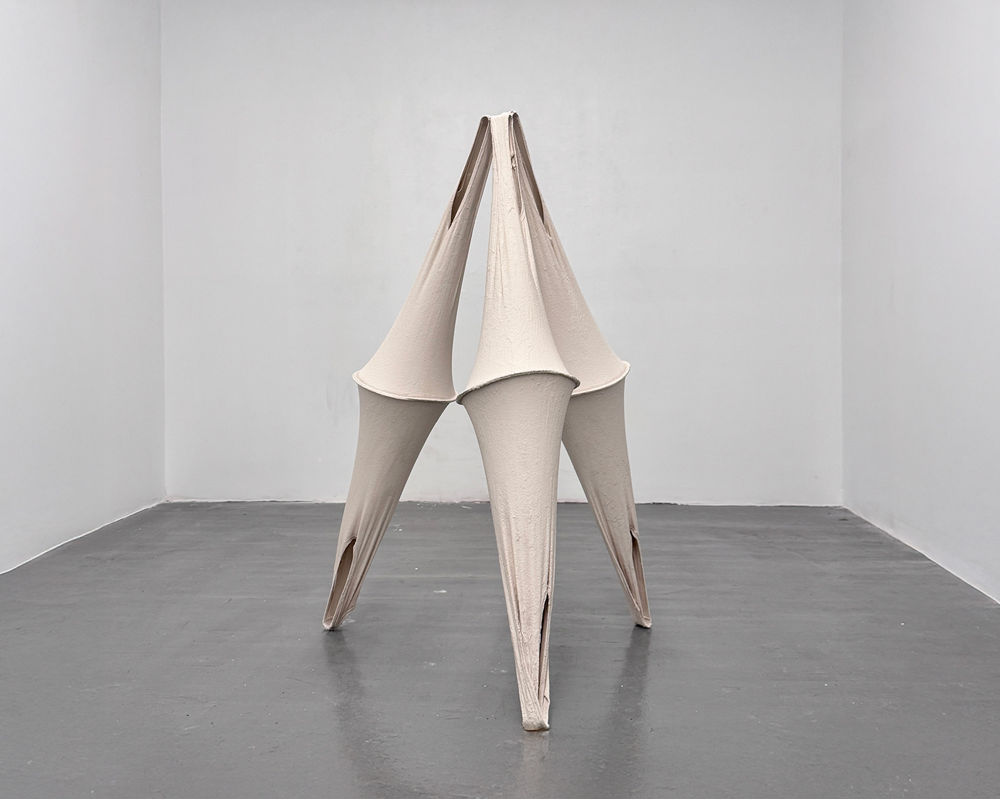
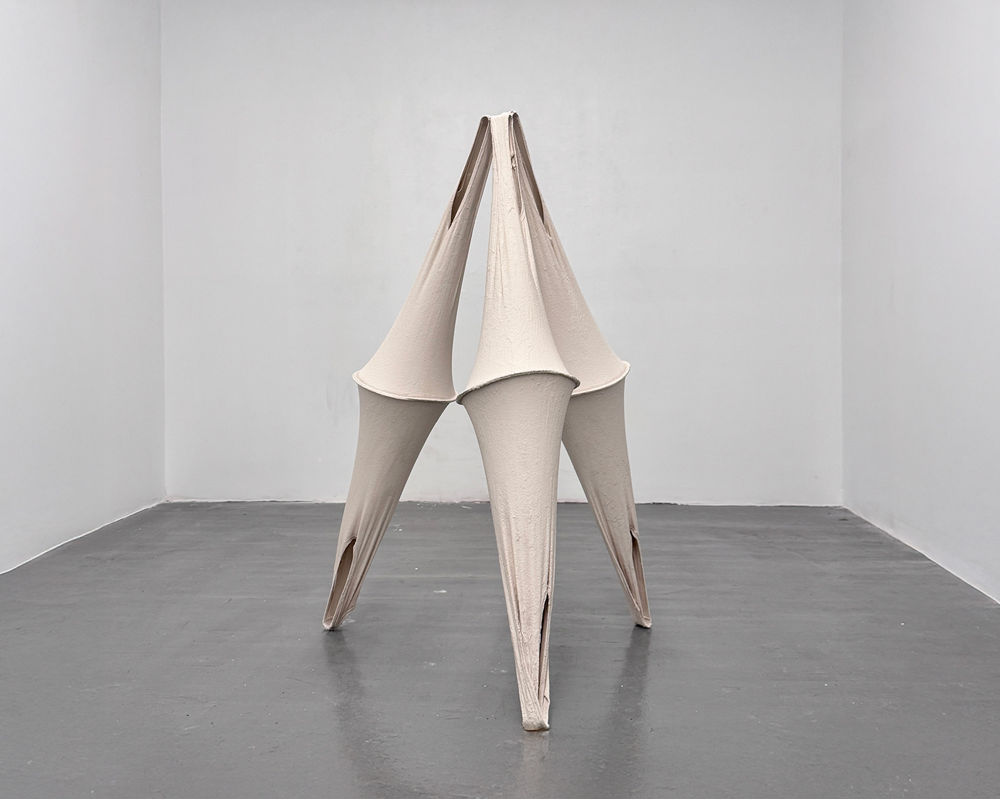

home /
info /
cv
6 Undergarments
2024
Cotton, wire, and aqua resin
56 x 32 x 32 in
 6 Undergarments, 2024
The issue of Taiwanese identity is multi-layered and dynamic, encompassing historical inheritance, cultural practices, political choices, and the influences of globalization. Taiwanese identity is not simply a binary opposition but is continually adjusted with social changes. The elasticity and diversity of this identity not only characterize Taiwanese society but also demonstrate the adaptability and creativity of Taiwanese people in the face of complex historical and real-world situations.
Taiwanese identity is uniquely shaped by our position amid cross-strait tensions. Faced with these challenges, the younger generation has developed a political and identity flexibility, allowing them to navigate the crises and paradoxes inherent in their self-identification. This flexibility is not a weakness but a distinctive aspect of Taiwanese identity, reflecting resilience and adaptability.
6 Undergarments
2024
Cotton, wire, and aqua resin
56 x 32 x 32 in
 6 Undergarments, 2024
The issue of Taiwanese identity is multi-layered and dynamic, encompassing historical inheritance, cultural practices, political choices, and the influences of globalization. Taiwanese identity is not simply a binary opposition but is continually adjusted with social changes. The elasticity and diversity of this identity not only characterize Taiwanese society but also demonstrate the adaptability and creativity of Taiwanese people in the face of complex historical and real-world situations.
Taiwanese identity is uniquely shaped by our position amid cross-strait tensions. Faced with these challenges, the younger generation has developed a political and identity flexibility, allowing them to navigate the crises and paradoxes inherent in their self-identification. This flexibility is not a weakness but a distinctive aspect of Taiwanese identity, reflecting resilience and adaptability.